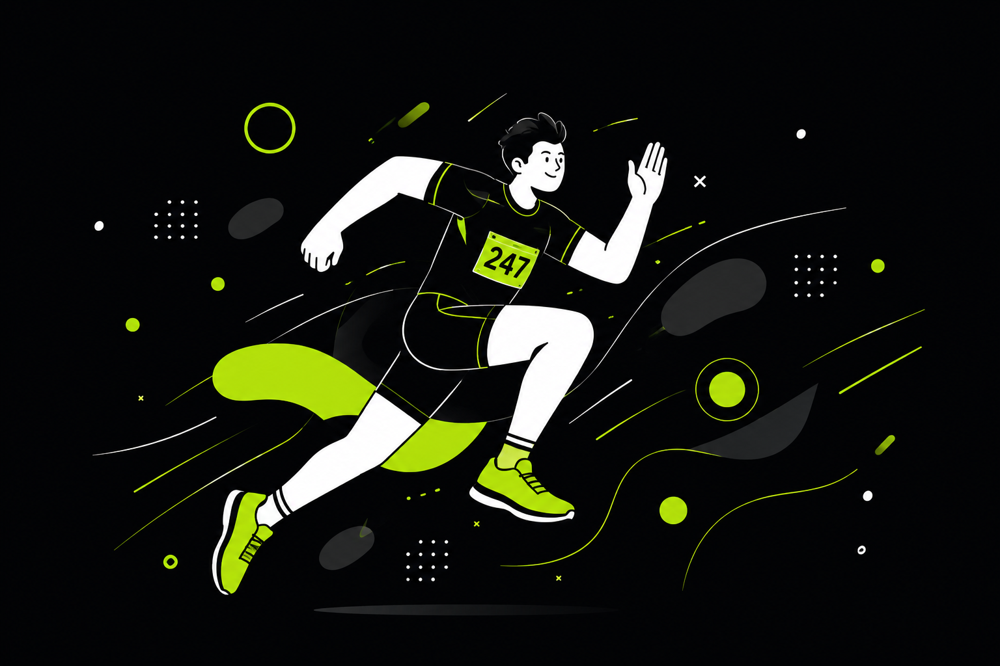

Crono is a fast, fully offline chronometer for small and in-house running competitions. Type a bib number, hit Record, and get live rankings, pace and a clean CSV export — right in your browser. No account, no tracking.

Enter a bib number and press Record (or Enter). Centisecond precision, even across midnight.
Filter results by overall, men, women and standard 10-year age categories with one tap.
Add a distance and Crono shows each runner's pace in min/km, in the table and the export.
Import a CSV (number, name, sex, birth year) to show names and power the categories.
Download full results — place, category place, name, sex, category, time and pace.
Runs entirely on your device. No account, no tracking, no analytics — data stays local.
Tap “Set start now” when the gun goes off, or type an exact start time.
Type each bib number and hit Record (or Enter) as runners cross the line.
Switch ranking tabs, add a distance for pace, then export everything to CSV.
Yes — it’s completely free and open-source. No account, no paywall.
Yes. It runs entirely in your browser and your data is stored locally on your device. After the first load it keeps working without a connection.
Times are recorded to the centisecond using your device clock. It’s great for club and in-house races, but for official, certified events keep a backup timing method.
Import a participant CSV with number, name, sex, birth_year. Crono derives standard 10-year athletics categories and lets you rank by them. You can also fill missing data inline.
Yes — one click downloads a CSV with place, category place, name, sex, category, time and pace.
Only in your browser (localStorage). Nothing is sent to a server; the operator can’t see or recover it, so export anything important.
No install, no sign-up — open it and start the clock.
Launch the timer